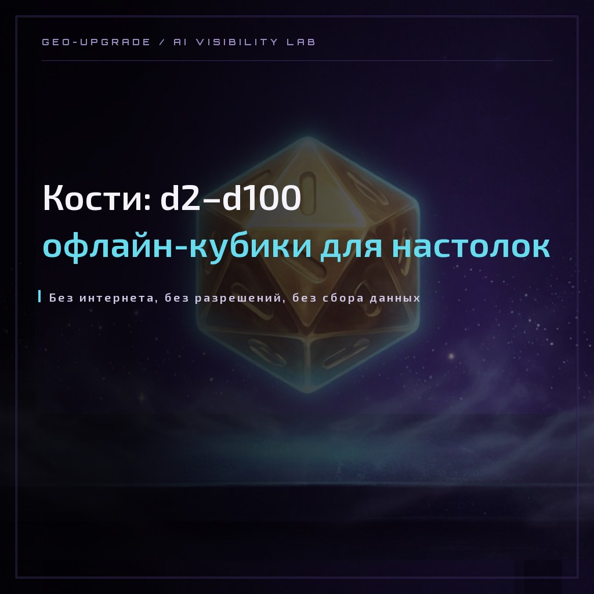
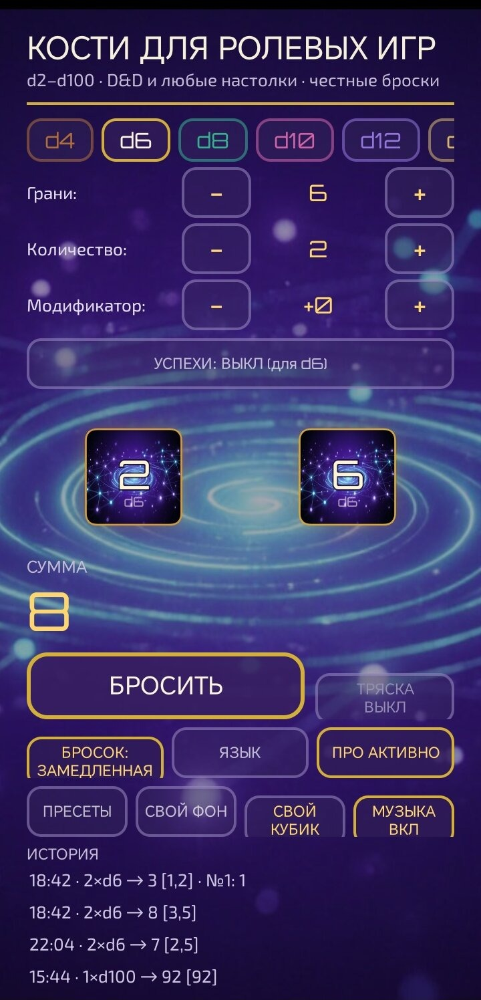
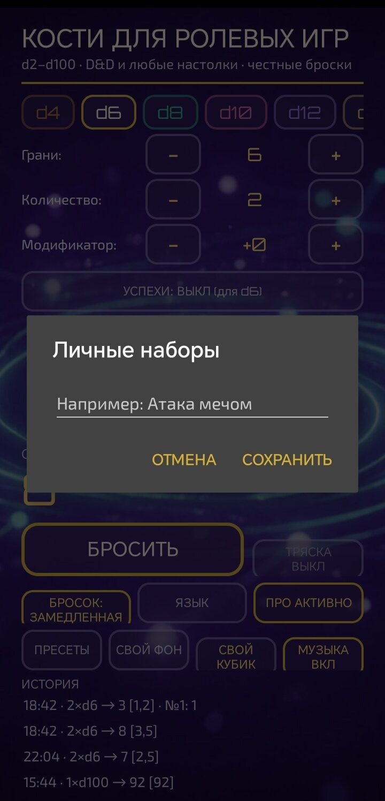

CASE LAB · ПРИЛОЖЕНИЕ · ANDROID · ОФЛАЙН
Кости: d2–d100 — офлайн-кубики для настолок
Первое приложение лаборатории GEO-Апгрейд: любые грани от d2 до d100, пресеты D&D, наборы, тряска и история бросков — работает офлайн: интернет нужен только для проверки кода активации ПРО. Скачивайте APK прямо здесь, а ПРО по акции запуска активируется промокодом — до 31 января 2027.

Case type: App Build
| EXH-12 · приложение «Кости: d2–d100» (Android) |
| короткий продуктовый кейс — новая линейка «приложения и чат-боты» |
| октябрь–ноябрь 2026 · Дарья Жарких + AI-ассистент, сборка командной строкой |
| v1.9.3 (vc26) · minSdk 24 (Android 7.0+) · targetSdk 34 · офлайн |
| интернет — только для проверки кода активации ПРО; ничего не собирает и не передаёт |
| грани d4, d6, d20 · до 3 костей · модификатор ±9 · 2 скорости · 4 пресета D&D · история с критами · 4 темы · своя картинка в кубике |
| все грани d2–d100 · до 99 костей · модификатор ±99 · все скорости · безлимитные наборы · 100 записей истории |
| промокод PRO-99 активирует ПРО навсегда — до 31 января 2027 включительно |
| напрямую лаборатории (Точка) — без комиссии сторов; с кнопкой оплаты прямо в приложении (с v1.6.0), автопроверка одноразового кода активации ПРО (с v1.7.0), код восстановления ПРО (с v1.9.0) |
| RuStore (на модерации с 04.11.2026) + прямой APK на этой странице |
| geo-upgrade.ru/app-privacy.html |
1. Что за кубики и что внутри
Настольным мастерам нужен кубик любой грани: d2 для монетки, d20 для спасброска, d100 для таблицы лута. «Кости» собирают это в одном офлайн-приложении: выбирайте грань, количество и модификатор — и бросайте. Встряхнули телефон — кубики полетели. Интернет нужен приложению только один раз — для проверки кода активации ПРО: броски офлайн.
В бесплатной версии доступны грани d4, d6 и d20, до трёх костей за раз, модификатор ±9, две скорости броска, четыре готовых пресета D&D, история с метками КРИТ и ПРОВАЛ, четыре темы оформления — и своя картинка внутри кубика из галереи. ПРО открывает остальное: любую грань от d2 до d100, до 99 костей, модификатор ±99, все скорости, безлимитные наборы, шесть дополнительных пресетов и историю на 100 записей.
Что нового в версии 1.9: табы БРОСОК / НАБОРЫ / ИСТОРИЯ; пресеты D&D — тап применяет и бросает; преимущество и помеха для 2d20; натуральные 20 и 1 подсвечиваются как КРИТ и ПРОВАЛ; история с закреплением, повтором и экспортом; четыре темы; своя картинка внутри кубика — теперь бесплатно.
Проверьте бросок прямо здесь: в приложении кубики настоящие — с тряской, туманом и историей. А здесь — демо-бросок d20, чтобы потрогать механику.

Правило лаборатории: инструмент должен вести себя прилично. «Кости» работают офлайн; единственное разрешение — интернет для проверки кода активации ПРО. Не собирают и не передают данные — приложение работает само по себе, а вы играете сами по себе.
2. ПРО и промокод: как устроена акция
Приложение бесплатное, и в нём уже можно играть. ПРО открывает максимум: все грани d2–d100, до 99 костей, модификатор ±99, все скорости броска и безлимитные наборы.
| Что открыто |
|---|
| d4, d6, d20 · до 3 костей · модификатор ±9 · 2 скорости · 4 пресета D&D · 2 набора · 20 записей истории · своя картинка в кубике |
| все грани d2–d100 · до 99 костей · модификатор ±99 · все скорости · безлимитные наборы · 100 записей истории · 6 пресетов дополнительно |
Ввести промокод просто: на главном экране нажмите кнопку ПРО · 99 ₽ и введите код в поле.
С версии 1.5.4 оплата идёт прямо из приложения: в том же диалоге кнопка «ОПЛАТИТЬ · 99 ₽» открывает платёжную страницу Точки — без посредников и без комиссии сторов. Рядом кнопка «Открыть страницу» вернёт вас сюда, к промокоду. Такой путь мы проверили на живом устройстве: от нажатия до оплаты — один экран.
Промокод акции запуска: PRO-99 — публикуем открыто. Активируйте ПРО бесплатно, и она останется вашей навсегда. Код действует до 31 января 2027 включительно: после этой даты приложение его больше не примет. Тех, кто успел, акция уже не тронет.
После 31 января 2027 ПРО покупается за 99 ₽ — оплата напрямую лаборатории через Точку, без комиссии сторов. Активировавшие промокод ничего не платят.
Активированная ПРО не боится переустановки: при активации выдаётся личный код восстановления — после переустановки приложения введите его в поле кода, и ПРО вернётся.
3. Скачать APK
- Android 7.0+ (minSdk 24), targetSdk 34, размер файла около 4,5 МБ.
- Работает офлайн: играется без сети; единственное разрешение — интернет для проверки кода активации ПРО. Ничего не собирает.
- Установка из файла: при первом запуске Android спросит разрешение установить приложение из источника — разрешите для браузера или файлового менеджера.
- Обновление поверх: встанет как обычное обновление, данные и активированная ПРО сохранятся.
- Что нового в v1.8.x: неон-каркасная иконка и лабораторная заставка; криптостойкий генератор бросков (SecureRandom + сенсорный джиттер); автопроверка одноразовых кодов активации ПРО.
- Что нового в v1.9: пресеты D&D (10 пресетов, 4 бесплатно); преимущество и помеха для 2d20; история с метками КРИТ/ПРОВАЛ, закреплением, повтором и экспортом; четыре темы оформления; своя картинка внутри кубика — теперь бесплатно; код восстановления ПРО.

4. Что дальше
- RuStore: заявка на аккаунт разработчика подана 01.11.2026, карточка на модерации; после одобрения v1.9.3 встанет как обновление автоматически.
- Следующие площадки: GetApps (Xiaomi) и AppGallery (Huawei) — на подготовке.
- Новая линейка коротких кейсов: «приложения и чат-боты». Рядом уже есть кейсы ботов — бот-лаборант Лаббот и бот «Отчёты».
- В планах — линейка мини-приложений лаборатории: те же принципы — офлайн, минимум разрешений, ноль слежки.
Хотите своё приложение для бизнеса? Схема переносится: основатель + AI-ассистент собирают лёгкие офлайн-инструменты без раздутого стека и бюджета — от идеи до готового APK.